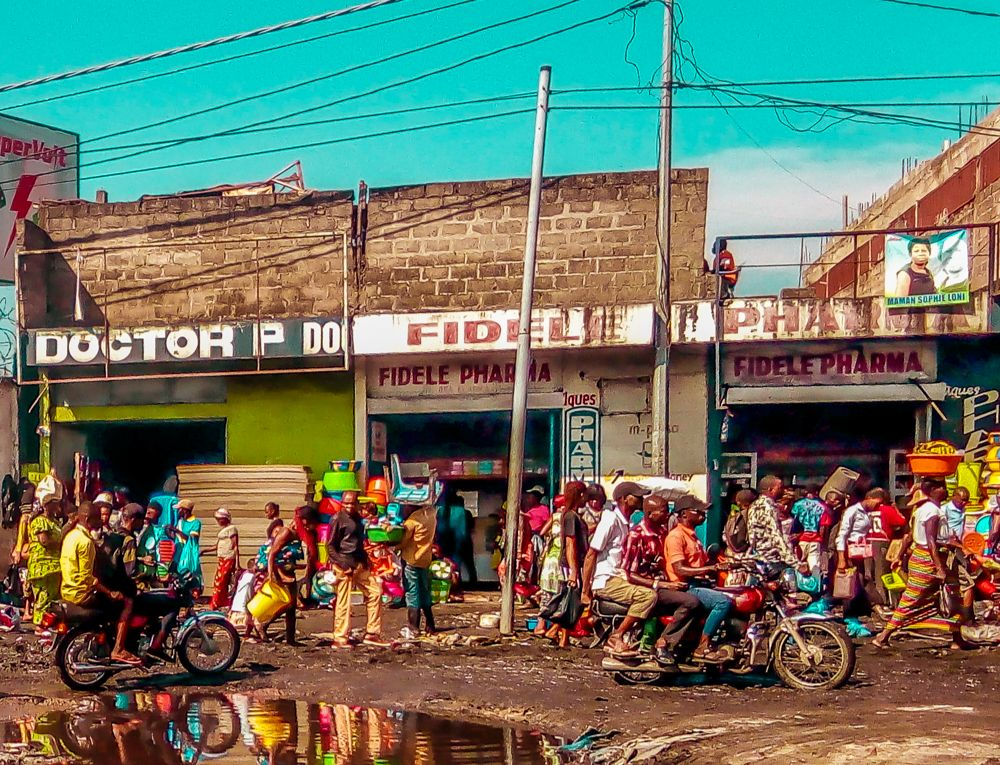
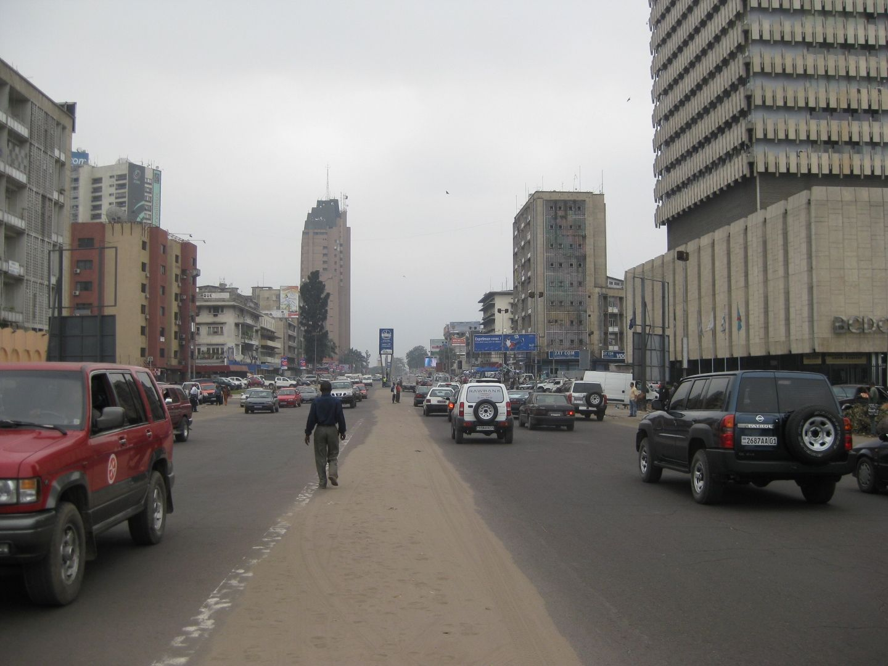
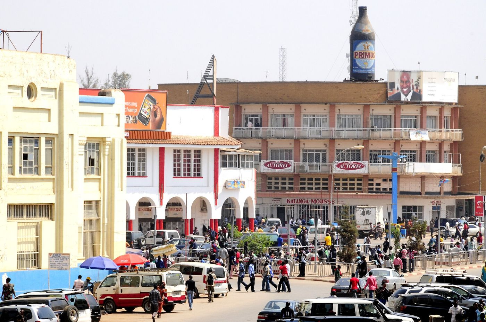
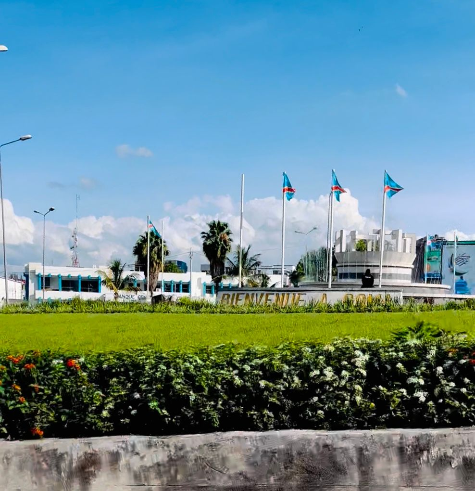
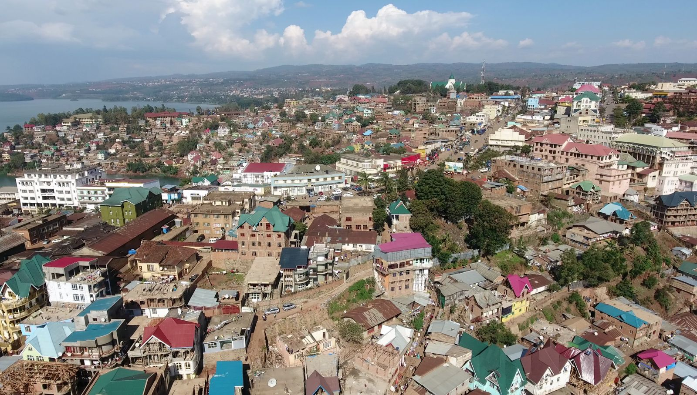
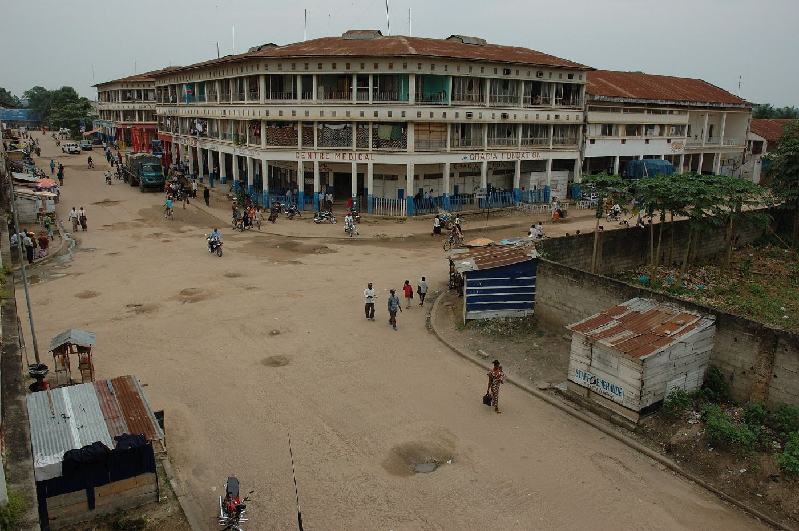
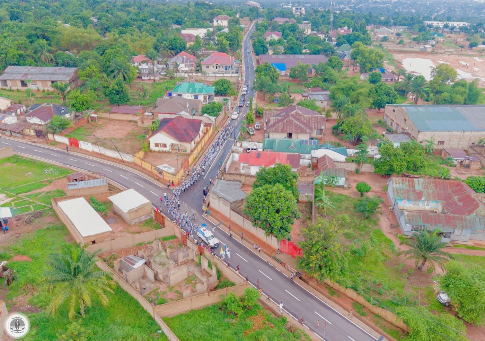
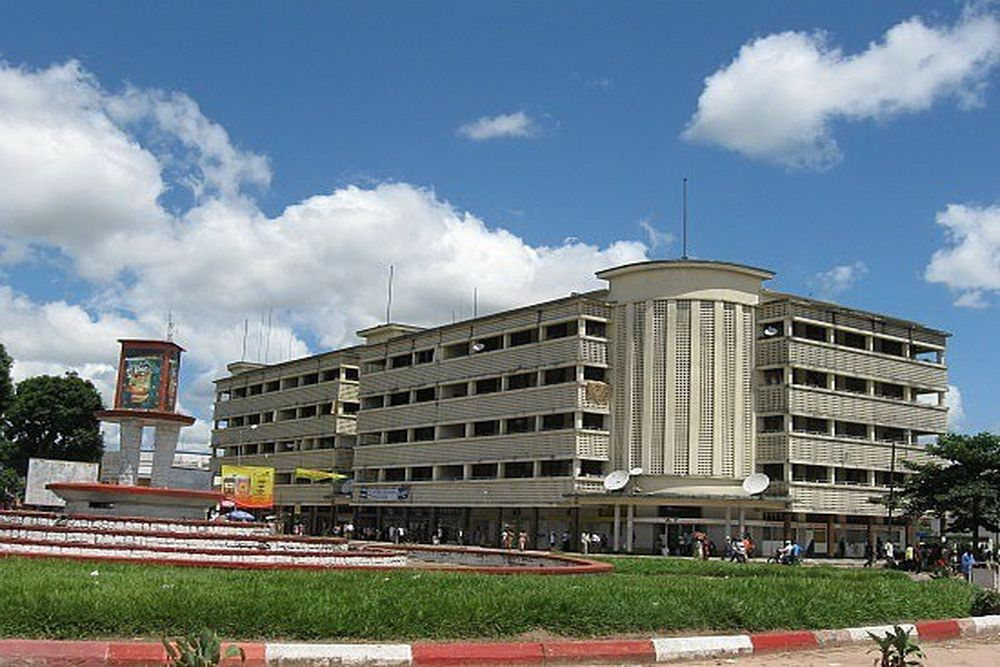
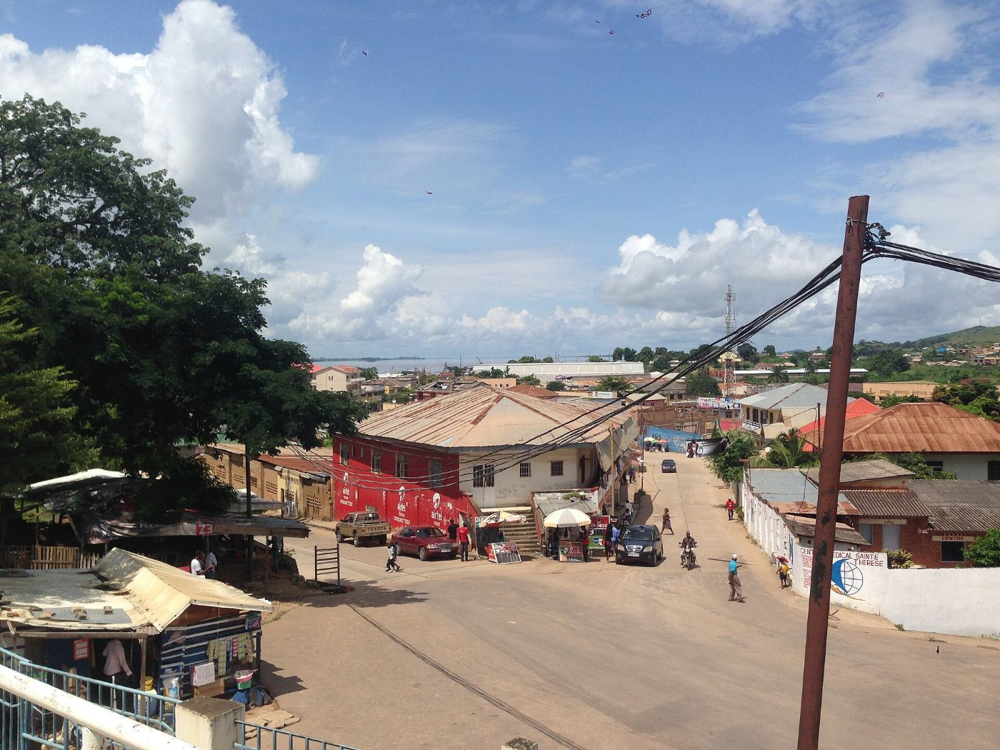
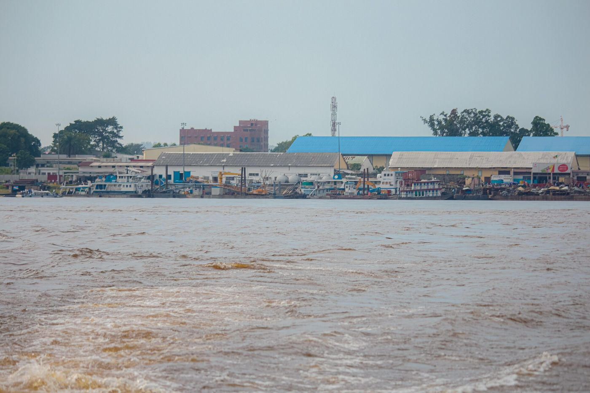

Kinshasa
Hub central à Masina, agence à la Gombe, 14 points relais. Livraison à moto dans les 24 communes.
Le jour même
12 villes, 28 agences et points relais, et un hub central à Masina, à dix minutes de l'aéroport de N'djili.

Tout passe par le hub de Masina : tri de nuit, départ des camions à 5 h, embarquement sur les vols cargo du matin.
En ville : 620 coursiers à Kinshasa, 90 à Lubumbashi, 70 à Goma. La moto passe là où les voitures attendent.
Camion quotidien sur la N1 vers Matadi et Boma, trois fois par semaine vers Kikwit. Navettes Lubumbashi – Kolwezi et Goma – Bukavu.
Fret sur les vols intérieurs depuis N'djili : chaque jour vers Lubumbashi et Goma, trois à cinq fois par semaine vers les autres villes. Barge pour les colis lourds, sur devis.

Hub central à Masina, agence à la Gombe, 14 points relais. Livraison à moto dans les 24 communes.
Le jour même

Vol cargo quotidien depuis N'djili. Livraison à moto dans les 7 communes, navette routière vers Kolwezi.
J+2 · express J+1

Vol cargo quotidien. Livraison à moto à Goma et Karisimbi, navette vers Bukavu trois fois par semaine.
J+2 · express J+1

Agence à Ibanda. Colis par avion depuis Kinshasa ou par la route depuis Goma.
J+2 · express J+1

Fret aérien cinq fois par semaine. Colis lourds par barge, sur devis.
J+2 · express J+1

Fret aérien quatre fois par semaine, liaison routière avec Kananga.
J+2 · express J+1

Fret aérien trois fois par semaine, liaison routière avec Mbuji-Mayi.
J+2 · express J+1

Camion quotidien sur la N1 via Matadi, départ du hub de Masina à 5 h.
J+1 · express Le jour même

Fret aérien trois fois par semaine, barges pour les colis de plus de 100 kg.
J+3 · express J+2
| Ville | Province | Depuis Kinshasa | Standard | Express | Livraison à domicile | Agences et relais |
|---|---|---|---|---|---|---|
| Kinshasa | Kinshasa | Hub central | — | — | Toute la ville, à moto | 14 |
| Matadi | Kongo Central | Route | J+1 | Le jour même | Centre-ville | 1 |
| Boma | Kongo Central | Route | J+1 | Le jour même | Centre-ville | 1 |
| Kikwit | Kwilu | Route | J+2 | J+1 | Centre-ville | 1 |
| Lubumbashi | Haut-Katanga | Avion | J+2 | J+1 | Toute la ville, à moto | 3 |
| Kolwezi | Lualaba | Avion | J+3 | J+2 | Centre-ville | 1 |
| Goma | Nord-Kivu | Avion | J+2 | J+1 | Toute la ville, à moto | 2 |
| Bukavu | Sud-Kivu | Avion | J+2 | J+1 | Centre-ville | 1 |
| Kisangani | Tshopo | Avion | J+2 | J+1 | Centre-ville | 1 |
| Mbuji-Mayi | Kasaï-Oriental | Avion | J+2 | J+1 | Centre-ville | 1 |
| Kananga | Kasaï-Central | Avion | J+2 | J+1 | Centre-ville | 1 |
| Mbandaka | Équateur | Avion | J+3 | J+2 | Centre-ville | 1 |
Déposez, retirez et payez vos colis près de chez vous.